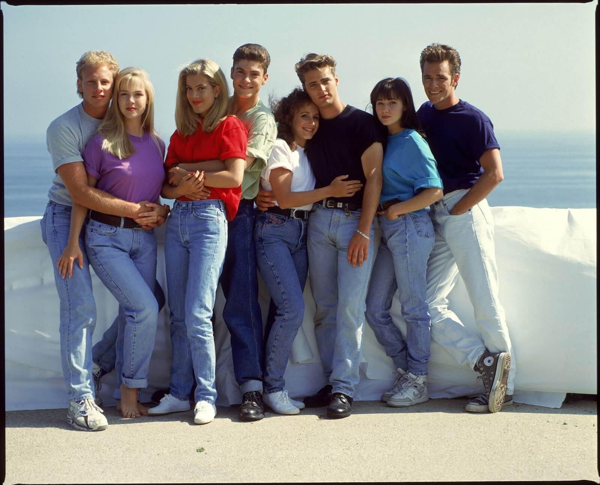

Tendencias de moda para mujer y hombre.
1. Pantalón oversize con cintura alta.

En esos años todo era Oversize, desde camiseta a pantalón, pero sobre todo los jeans, como se puede ver en la imagen. Sin embargo, si hasta hace unos años los jeans de cintura alta ya no estaban de moda, hoy en día se estan volviendo cada vez más populares, pero con la diferencia de estar cada vez más apretados y mantener el tobillo más abierto.